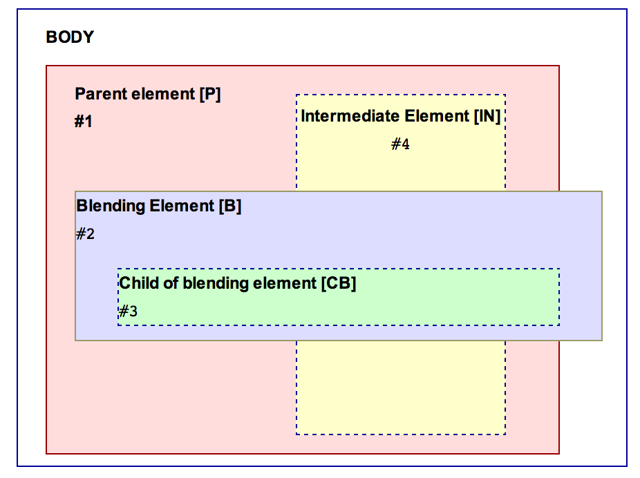

This document is intended to be used as a guideline for the testing activities related to the Compositing and Blending spec [[!compositing-1]]. Its main goal is to provide an overview of the general testing areas and an informative description of possible test cases.
This document is not meant to replace the spec in determining the normative and non-normative assertions to be tested, but rather complement it.
In order to increase the quality of the test contributions, this document offers a set of test cases description for conducting testing (see ).
In terms of actual tests produced for the CSS Compositing and Blending, the main goal
is to ensure that most tests are automatable (i.e. they're either
reftests or use testharness.js). Even where manual tests
are absolutely necessary they should be written so that they can be
easily automated – as there are on-going efforts to make
WebDriver [[webdriver]] automated tests a first class citizen in W3C
testing. This means that even if a manual test requires user
interaction, the validation or PASS/FAIL conditions should still be
clear enough as to allow automatic validation if said interaction is
later automated.
Since CSS blending has only three new CSS properties, the approach is to deep dive into every aspect of the spec as much as possible. Tests will be created for the testing areas listed in and having as guidance the test cases description from .
These testing areas cover things explicitly defined in the normative sections of the Blending and Compositing spec. Please note that while detailed, this list is not necessarily exhaustive and some normative behaviors may not be contained in it. When in doubt, consult the Blending and Compositing spec or ask a question on the mailing list.
Below is the list of explicit testing areas:
mix-blend-modeisolationbackground-blend-modeThese are testing areas either normatively defined in other specs that explicitly refer to the Blending and Compositing spec (e.g. [[!css3-transforms]]) or simply not explicitly defined, but implied by various aspects of the spec (e.g. processing model, CSS 2.1 compliance, etc.). Please note that while detailed, this list is not necessarily exhaustive and some normative behaviors may not be contained in it. When in doubt, consult the Blending and Compositing spec or ask a question on the mailing list.
Below is the list of implicit testing areas:
<video><canvas><table>transformstransitions animations mix-blend-modeThe following diagram describes a list of notations to be used later on in the document as well as the general document structure the test cases will follow. The test cases should not be limited to this structure. This should be a wireframe and people are encouraged to come up with complex test cases as well.

The intended structure of the document is the following:
<body> <div id="[P]"> <div id="[IN-S]"></div> <div id="[IN-P]"> <div id="[B]"> <div id="[CB]"></div> </div> </div> </body>
Unless otherwise stated, test cases asumes the following properties for the elements:
background-color of the bodybackground-color set to a fully opaque color for all the other elements The CSS associated to the elements used in the tests shouldn't use properties that creates a stacking context, except the ones specified in the test case descriptions.
Every test case has a description of the elements used. The notation from the image is used in the test case description too (e.g. for parent element the notation is [P]). Each test case uses only a subset of the elements while the other elements should just be removed.
mix-blend-mode other than normal creates a stacking contextRefers to the following assertion in the spec: Applying a blendmode other than ‘normal’ to the element must establish a new stacking context [CSS21].
| Test name | Elements and styles | Expected result |
|---|---|---|
Simple <div> |
1 element required: [B] [B] - element with mix-blend-mode other than normal
|
The element [B] creates a stacking context - the computed value of z-indexhas a value other than auto |
mix-blend-mode blends with the content within the current stacking contextRefers to the following assertion in the spec: An element that has blending applied, must blend with all the underlying content of the stacking context [CSS21] that that element belongs to.
| Test name | Elements and styles | Expected result |
|---|---|---|
| Blending simple elements | 2 elements required: [P] and [B] [P] - parent element with a property that creates a stacking context (e.g. position:fixed) [B] - element with mix-blend-mode other than normal
|
The color of the parent element [P] mixes with the color of the child element [B]. |
Blending <video> |
2 elements required: [B] and [IN-S] [B] - <video> element with mix-blend-mode other than normal [IN-S] - sibling(of the element [B]) visually overlaping the <video> element [IN-S] has some text inside |
The content of the video element [B] mixes with the colors of the sibling element and the text from [IN-S]. |
| Blending with a sibling | 3 elements required: [P], [B] and [IN-S] [P] - parent element with a property that creates a stacking context (e.g. position:fixed) [B] - element with mix-blend-mode other than normal [IN-S] - sibling of the element [B] The [IN-S] element visually overlaps the [B] element |
The colors of the parent element [P] and the sibling element [IN-S] mixes with the color of the blended element [B]. |
| Blending with two levels of ascendants | 3 elements required: [P], [B] and [IN-P] [P] - parent element with a property that creates a stacking context (e.g. position:fixed) [B] - element with mix-blend-mode other than normal [IN-P] - Intermediate child element between the parent [P] and the child [B] |
The colors of the parent element [P] and the child element [IN-P] mixes with the color of the blended element [B]. |
mix-blend-mode doesn't blend with anything outside the current stacking contextRefers to the following assertion in the spec: An element that has blending applied, must blend with all the underlying content of the stacking context [CSS21] that that element belongs to.
| Test name | Elements and styles | Expected result |
|---|---|---|
| Blending child overflows the parent | 2 elements required: [P] and [B] [P] - parent element with a property that creates a stacking context (e.g. position:fixed) [B] - element with mix-blend-mode other than normal The blending element [B] has content that lies outside the parent element. Set the background-color of the body to a value other than default |
The color of the parent element mixes with the color of the child element. The area of the child element outside of the parent element doesn't mix with the color of the body |
| Parent with transparent pixels | 2 elements required: [P] and [B] [P] - parent element with a property that creates a stacking context (e.g. position:fixed) The element has some text inside and default value for background-color [B] - element with mix-blend-mode other than normal The background-color of the body has a value other than default |
The color of the text from the parent element [P] mixes with the color of the child element [B]. No blending between the color of the body and the color of the blending element [B].
|
Parent with border-radius |
2 elements required: [P] and [B] [P] - parent element with a property that creates a stacking context (e.g. position:fixed) [P] has border-radius specified (e.g.50%). [B] - element with mix-blend-mode other than normal [B] has content that lies outside the parent element, over a rounded corner. The background-color of the body has a value other than default. |
The color of the parent element mixes with the color of the child element. The area of the child element which draws over the rounded corner doesn't mix with the color of the body |
mix-blend-mode other than normal must cause a group to be isolatedRefers to the following assertion in the spec: operations that cause the creation of stacking context [CSS21] must cause a group to be isolated.
| Test name | Elements and styles | Expected result |
|---|---|---|
| Child of the blended element has opacity | 3 elements required: [P], [B] and [CB] [P] - parent element with a property that creates a stacking context (e.g. position:fixed) [B] - element with mix-blend-mode other than normal [CB] - child of the element [B] with opacity less than one. |
The group created by the two child elements([B] and [CB]) is blended with the parent element [P]. No blending between [B] and [CB] |
| Overflowed child of the blended element | 3 elements required: [P], [B] and [CB] [P] - parent element with a property that creates a stacking context (e.g. position:fixed) [B] - element with mix-blend-mode other than normal [CB] - child of the element [B] with content that lies outside the parent element [B]. |
The group created by the two child elements([B] and [CB]) is blended with the parent element [P]. No blending between [B] and [CB]. There is only one color for the entire element [CB] |
| Blended element with transparent pixels | 3 elements required: [P], [B] and [CB] [P] - parent element with a property that creates a stacking context (e.g. position:fixed) [B] - element with mix-blend-mode other than normal and transparent background-color [CB] - child of the element [B] |
The group created by the two child elements([B] and [CB]) is blended with the parent element [P]. No blending between [B] and [CB]. |
mix-blend-mode must work properly with css transforms| Test name | Elements and styles | Expected result |
|---|---|---|
| Parent with 3D transform | 2 elements required: [P] and [B] [P] - parent element with a property that creates a stacking context (e.g. position:fixed) [P] has 3D transform [B] - element with mix-blend-mode other than normal
| The color of the parent element [P] mixes with the color of the child element [B] The element (and the content) of the element [P] is properly transformed |
| Blended element with 3D transform | 2 elements required: [P], [B] and [CB] [P] - parent element with a property that creates a stacking context (e.g. position:fixed) [B] - element with mix-blend-mode other than normal and 3D transform [CB] - child of the element [B] |
The color of the parent element [P] mixes with the color of the child element [B] The element (and the content) of the element [P] is properly transformed |
| Both parent and blended element with 3D transform | 2 elements required: [P] and [B] [P] - parent element with a property that creates a stacking context (e.g. position:fixed) [P] with 3D transform [B] - element with mix-blend-mode other than normal and 3D transform
|
The color of the parent element [P] mixes with the color of the child element [B] The elements (and the content) of the elements [P] and [B] are properly transformed |
| Blended element with transform and preserve-3d | 3 elements required: [P], [B] and [CB] [P] - parent element with a property that creates a stacking context (e.g. position:fixed) [B] - element with mix-blend-mode other than normal and transform with transform-style:preserve-3d [CB] - child of the element [B]. It has 3D transform property |
The child element [CB] will NOT preserve its 3D position. mix-blend-mode override the behavior of transform-style:preserve-3d:
creates a flattened representation of the descendant elements [Check this] The color of the group created by the child elements([B] and [CB]) will blend with the color of the parent element [P] |
| Blended element with transform and perspective | 2 elements required: [P] and [B] [P] - parent element with a property that creates a stacking context (e.g. position:fixed) [B] - element with mix-blend-mode other than normal and transform with perspective set to positive length |
[Check] The colors of the parent and the child are mixed ([P] and [B]) The element (and the content) of the element [B] is properly transformed |
| Sibling with 3D transform between the parent and the blended element | 3 elements required: [P], [B] and [IN-S] [P] - parent element with a property that creates a stacking context (e.g. position:fixed) [B] - element with mix-blend-mode other than normal [IN-S] - Sibling(of the element [B]) with 3D transform between the parent [P] and the child [B]
|
The colors of the parent element [P] and the transformed sibling element [IN-S] mixes with the color of the blended element [B]. The element (and the content) of the element [IN-S] is properly transformed |
| Parent with 3D transform and transition | 2 elements required: [P] and [B] [P] - parent element with a property that creates a stacking context (e.g. position:fixed) [P] has 3D transform and transition [B] - element with mix-blend-mode other than normal
| The color of the parent element [P] mixes with the color of the child element [B] The element (and the content) of the element [P] is properly transformed |
| Sibling with 3D transform(and transition) between the parent and the blended element | 3 elements required: [P], [B] and [IN-S] [P] - parent element with a property that creates a stacking context (e.g. position:fixed) [B] - element with mix-blend-mode other than normal [IN-S] - sibling(of the element [B]) with 3D transform and transition between the parent [P] and the child [B]
|
The colors of the parent element [P] and the transformed sibling element [IN-S] mixes with the color of the blended element [B]. The element (and the content) of the element [IN-S] is properly transformed |
mix-blend-mode must work properly with elements with overflow propertyParent element with overflow:scroll |
2 elements required: [P] and [B] [P] - parent element with a property that creates a stacking context (e.g. position:fixed) [P] has overflow:scroll [B] - element with mix-blend-mode other than normal tat overflows the parents [P] dimensions so that it creates scrolling for the parent
| The color of the parent element [P] mixes with the color of the child element [B]. The scrolling mechanism is not affected. |
Blended element with overflow:scroll |
2 elements required: [P] and [B] [P] - parent element with a property that creates a stacking context (e.g. position:fixed) [B] - element with mix-blend-mode other than normal, overflow:scroll and a child element that creates overflow for [B] |
The color of the parent element [P] mixes with the color of the child element [B] The scrolling mechanism is not affected. |
Parent element with overflow:scroll and blended with position:fixed |
2 elements required: [P] and [B] [P] - parent element with a property that creates a stacking context (e.g. position:fixed) [P] has overflow:scroll [B] - element with mix-blend-mode other than normal, position:fixed and should overflow the parents [P] dimensions so that it creates scrolling for the parent |
The color of the parent element [P] mixes with the color of the child element [B] The blending happens when scrolling the content of the parent element [P] too. The scrolling mechanism is not affected. |
Parent with overflow:hidden and border-radius |
2 elements required: [P] and [B] [P] - parent element with a property that creates a stacking context (e.g. position:fixed) [P] has overflow:hidden and border-radius specified (e.g.50%) [B] - element with mix-blend-mode other than normal with content that lies outside the parent element, over a rounded corner Set the background-color of the body to a value other than default. |
The color of the parent element mixes with the color of the child element. The area of the child element which draws over the rounded corner is properly cut |
Blended element with overflow:hidden and border-radius |
3 elements required: [P] and [B] and [CB] [P] - parent element with a property that creates a stacking context (e.g. position:fixed) [B] - element with mix-blend-mode other than normal, overflow:hidden and border-radius specified (e.g.50%). [CB] - child of the element [B], with content that lies outside the parent element, over a rounded corner. |
The group created by the two child elements([B] and [CB]) is blended with the parent element [P]. No blending between [B] and [CB]. [CB] is properly clipped so no overflow is visible. |
Intermediate child with overflow:hidden and border-radius between the parent and the blended element |
3 elements required: [P], [B] and [IN-P] [P] - parent element with a property that creates a stacking context (e.g. position:fixed) [B] - element with mix-blend-mode other than normal that overflows the parents [IN-P] dimensions
[IN-P] - child(of the element [P]) with overflow:hidden and border-radius specified (e.g.50%)
|
The colors of the parent element [P] and the child element [IN-P] mixes with the color of the blended element [B]. [B] is is properly clipped so no overflow is visible |
| Test name | Elements and styles | Expected result |
|---|---|---|
Blended element with border-image |
2 elements required: [P] and [B] [P] - parent element with a property that creates a stacking context (e.g. position:fixed) [B] - element with mix-blend-mode other than normal and border-image specified as a png file
|
The color of the parent element [P] mixes with the color of the child element. The color of the border-image mixes with the color of the parent element [P].
|
Blending with <canvas> |
2 elements required: [B] and [IN-S] [B] - <canvas> element with mix-blend-mode other than normal [IN-S] - Sibling of the <canvas> element with some text The [IN-S] element overlaps the <canvas> element
|
The content of the <canvas> element mixes with the color of the sibling element and the text [IN-S]. |
Blended <canvas> |
2 elements required: [P] and [B] [P] - parent element with a property that creates a stacking context (e.g. position:fixed) [B] - Child <canvas> element with mix-blend-mode other than normal
|
The color of the <canvas> element [B] mixes with the color of the parent element [P] . |
Blended <video> |
2 elements required: [P] and [B] [P] - parent element with a property that creates a stacking context (e.g. position:fixed) [B] - <video> element with mix-blend-mode other than normal
|
The color of the <video> element mixes with the color of the parent element [P] . |
Blending with <iframe> |
2 elements required: [B] and [IN-S] [B] - <iframe> element with mix-blend-mode other than normal [IN-S] - sibling(of the element [B]) with some text The [IN-S] element visually overlaps the <iframe> element
|
The color of the <iframe> element mixes with the color of the sibling element and the text [IN-S]. |
Blended <iframe> |
2 elements required: [P] and [B] [P] - parent element with a property that creates a stacking context (e.g. position:fixed) [B] - <iframe> element with mix-blend-mode other than normal
|
The color of the <iframe> element [B] mixes with the color of the parent element [P]. |
Blended element with mask property |
2 elements required: [P] and [B] [P] - parent element with a property that creates a stacking context (e.g. position:fixed) [B] - element with mix-blend-mode other than normal and mask property specified to an SVG image (e.g. circle) |
The colors of the parent and the masked child are mixed ([P] and [B]) |
Blended element with clip-path property |
2 elements required: [P] and [B] [P] - parent element with a property that creates a stacking context (e.g. position:fixed) [B] - element with mix-blend-mode other than normal and clip-path property specified to a basic shape (e.g. ellipse) |
The colors of the parent and the clipped child are mixed ([P] and [B]) |
Blended element with filter property |
2 elements required: [P] and [B] [P] - parent element with a property that creates a stacking context (e.g. position:fixed) [B] - element with mix-blend-mode other than normal and filter property value other than none |
The filter is applied and the result is mixed with the parent element |
Blended element with transition |
2 elements required: [P] and [B] [P] - parent element with a property that creates a stacking context (e.g. position:fixed) [B] - element with mix-blend-mode other than normal and transition-property for opacity |
The transition is applied and the result is mixed with the parent element |
Blended element with animation |
2 elements required: [P] and [B] [P] - parent element with a property that creates a stacking context (e.g. position:fixed) [B] - element with mix-blend-mode other than normal and animation specified |
The animation is applied to the child element and the result is mixed with the parent element |
| Image element | 2 elements required: [P] and [B] [P] - parent element with a property that creates a stacking context (e.g. position:fixed) [B] - <img> element (.jpeg or .gif image) with mix-blend-mode other than normal |
The color of the <img> is mixed with the color of the <div>. |
| SVG element | 2 elements required: [P] and [B] [P] - parent element with a property that creates a stacking context (e.g. position:fixed) [B] - SVG element with mix-blend-mode other than normal |
The color of the SVG is mixed with the color of the <div>. |
| Paragraph element | 2 elements required: [P] and [B] [P] - parent element with a property that creates a stacking context (e.g. position:fixed) [B] - paragraph element with mix-blend-mode other than normal |
The color of the text from the paragraph element is mixed with the color of the <div> |
| Paragraph element and background-image | 2 elements required: [P] and [B] [P] - parent element with a property that creates a stacking context (e.g. position:fixed) and background-image [B] - Child p element with some text and mix-blend-mode other than normal |
The color of the text from the p element is mixed with the background image of the <div>. |
| Set blending from JavaScript | 2 elements required: [P] and [B] [P] - parent element with a property that creates a stacking context (e.g. position:fixed) [B] - Child <div> element with no mix-blend-mode specifiedFrom JavaScript, set the mix-blend-mode property for the child <div> to a value other than normal |
The colors of the <div> elements are mixed. |
mix-blend-mode
mix-blend-mode with simple SVG graphical elementsmix-blend-mode applies to svg, g, use, image, path, rect, circle, ellipse, line, polyline, polygon, text, tspan, and marker.
| Test name | Elements and styles | Expected result |
|---|---|---|
| Circle with SVG background | Set a background color for the SVG. Create 16 circle elements and fill them with a solid color. Apply each mix-blend-mode on them. |
The color of the circle is mixed with the color of the background. |
| Ellipse with SVG background | Set a background color for the SVG. Create an ellipse element and fill it with a solid color. Apply a mix-blend-mode on it other than normal. |
The color of the ellipse is mixed with the color of the background. |
| Image with SVG background | Set a background color for the SVG. Create an image element and apply a mix-blend-mode other than normal. |
The image is mixed with the color of the background. |
| Line with SVG background | Set a background color for the SVG. Create a line element and fill it with a solid color. Apply a mix-blend-mode on it other than normal. |
The color of the line is mixed with the color of the background. |
| Path with SVG background | Set a background color for the SVG. Create a path element and fill it with a solid color. Apply a mix-blend-mode on it other than normal. |
The color of the path is mixed with the color of the background. |
| Polygon with SVG background | Set a background color for the SVG. Create a polygon element and fill it with a solid color. Apply a mix-blend-mode on it other than normal. |
The color of the polygon is mixed with the color of the background. |
| Polyline with SVG background | Set a background color for the SVG. Create a polyline element and fill it with a solid color. Apply a mix-blend-mode on it other than normal. |
The color of the polyline is mixed with the color of the background. |
| Rect with SVG background | Set a background color for the SVG. Create a rect element and fill it with a solid color. Apply a mix-blend-mode on it other than normal. |
The color of the rect is mixed with the color of the background. |
| Text with SVG background | Set a background color for the SVG. Create a text element and apply a mix-blend-mode other than normal. |
The text is mixed with the color of the background. |
| Text having tspan with SVG background | Set a background color for the SVG. Create a text element and a tspan inside it. Apply a mix-blend-mode other than normal on the tspan. |
The text is mixed with the color of the background. |
| Gradient with SVG background | Set a background color for the SVG. Create a rect element and fill it with a gradient. Apply a mix-blend-mode on it other than normal. |
The gradient is mixed with the color of the background. |
| Pattern with SVG background | Set a background color for the SVG. Create a rect element and fill it with a pattern. Apply a mix-blend-mode on it other than normal. |
The pattern is mixed with the color of the background. |
| Set blending on an element from JavaScript | Set a background color for the SVG. Create a rect element and fill it with a solid color. Apply a mix-blend-mode (other than normal) on it from script. |
The color of the rect is mixed with the color of the background. |
| Marker with SVG background | Set a background color for the SVG. Create a line element containing a marker. Apply a mix-blend-mode other than normal on the marker. |
The marker color is mixed with the color of the background. |
| Metadata with SVG background | Set a background color for the SVG. Create a metadata element containing an embedded pdf. Apply a mix-blend-mode other than normal on the marker. |
The metadata is not mixed with the color of the background. |
| ForeignObject with SVG background | Set a background color for the SVG. Create a foreignObject element containing a simple xhtml file. Apply a mix-blend-mode other than normal on the marker. |
The foreignObject is not mixed with the color of the background. |
mix-blend-mode with groups| Test name | Elements and styles | Expected result |
|---|---|---|
| Group of overlapping elements with SVG background | Set a background color for the SVG. Create a group element containing two overlapping rect elements, each filled with a different solid color. Apply a mix-blend-mode on the group other than normal. |
The group is mixed as a whole with the color of the background. |
mix-blend-mode with isolated groupsBy default, every element must create a non-isolated group. However, certain operations in SVG will create isolated groups. If one of the following features is used, the group must become isolated:
| Test name | Elements and styles | Expected result |
|---|---|---|
| Blending two elements in an isolated group | Set a background color for the SVG. Create a group element containing two overlapping rect elements, each filled with a different solid color. Apply opacity less than 1 on the group and a mix-blend-mode other than normal on the second rect. |
Only the intersection of the rect elements should mix. |
| Blending in a group with opacity | Set a background color for the SVG. Create a group element containing a rect elements filled with a different solid color. Apply opacity less than 1 on the group and a mix-blend-mode other than normal on the rect. |
The rect will not mix with the content behind it. |
| Blending in a group with filter | Set a background color for the SVG. Create a group element containing a rect elements filled with a different solid color. Apply a filter on the group and a mix-blend-mode other than normal on the rect. |
The rect will not mix with the content behind it. |
| Blending in a group with 2D transform | Set a background color for the SVG. Create a group element containing a rect elements filled with a different solid color. Apply a transform on the group and a mix-blend-mode other than normal on the rect. |
The rect will mix with the content behind it. |
| Blending in a group with 3D transform | Set a background color for the SVG. Create a group element containing a rect elements filled with a different solid color. Apply a 3d transform on the group and a mix-blend-mode other than normal on the rect. |
The rect will not mix with the content behind it. |
| Blending in a group with a mask | Set a background color for the SVG. Create a group element containing a rect elements filled with a different solid color. Apply a mask on the group and a mix-blend-mode other than normal on the rect. |
The rect will not mix with the content behind it. |
| Blending in a group with mix-blend-mode | Set a background color for the SVG. Create a group element containing a rect elements filled with a different solid color. Apply a mix-blend-mode other than normal on the group and a mix-blend-mode other than normal on the rect. |
The rect will not mix with the content behind it. |
| Blend with element having opacity | Set a background color for the SVG. Create a rect element filled with a different solid color. Apply opacity less than 1 and a mix-blend-mode other than normal on the rect. |
The rect will mix with the content behind it. |
| Blend with element having stroke | Set a background color for the SVG. Create a rect element filled with a different solid color. Apply a stroke and a mix-blend-mode other than normal on the rect. |
The rect will mix with the content behind it. |
| Blend with element having stroke-opacity | Set a background color for the SVG. Create a rect element filled with a different solid color. Apply a stroke, stroke-opacity less than 1 and a mix-blend-mode other than normal on the rect. |
The rect will mix with the content behind it. |
| Blend with element having stroke-dasharray | Set a background color for the SVG. Create a rect element filled with a different solid color. Apply a stroke-dasharray and a mix-blend-mode other than normal on the rect. |
The rect will mix with the content behind it. |
| Blend with element having transform | Set a background color for the SVG. Create an image element. Apply a transform (any combination of translate, rotate, scale, skew) and a mix-blend-mode other than normal on the image. |
The image will mix with the content behind it. |
| Blend with SVG having viewbox and preserveAspectRatio set | Set a background color for the SVG, as well as viewbox and preserveAspectRatio. Create a rect element filled with a different solid color and apply a mix-blend-mode other than normal on it. |
The rect will mix with the content behind it. |
| Blend with an element having color-profile set | Set a background color for the SVG. Create an image element. Apply a color-profile (sRGB, for example) and a mix-blend-mode other than normal on the image. |
The image will mix with the content behind it. |
| Blend with an element having overflow | Set a background color for the SVG. Create an image larger than the SVG. Apply overflow (visible, hidden, scroll) and a mix-blend-mode other than normal on the image. |
The image will mix with the content behind it. |
| Blend with an element having clip-path | Set a background color for the SVG. Create an image element. Apply a clip-path and a mix-blend-mode other than normal on the image. |
The image will mix with the content behind it. |
| Blend with an element having a mask | Set a background color for the SVG. Create an image element. Apply a mask and a mix-blend-mode other than normal on the image. |
The image will mix with the content behind it. |
| Blend with an element having a filter | Set a background color for the SVG. Create an image element. Apply a filter and a mix-blend-mode other than normal on the image. |
The image will mix with the content behind it. |
| Blend with an animated element | Set a background color for the SVG. Create a rect element filled with a different solid color. Apply a animateTransform and a mix-blend-mode other than normal on the rect. |
The rect will mix with the content behind it. |
| Set blending from a script element | Set a background color for the SVG. Create a rect element and fill it with a solid color. Apply a mix-blend-mode (other than normal) on it from an svg script element. |
The rect will mix with the content behind it. |